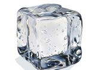
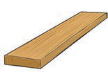
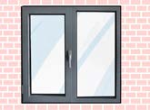
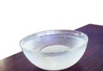
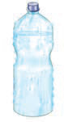
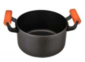
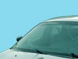

2.
Using the Information obtained in number (1) examine the objects in Table 3 below and mark with a “√” in the respective space.
Table 3: Indicating objects that allow or block light from passing through
| Picture | Allows light (Transparent) | Does not allow light (Opaque) | Partially allows light (Translucent) |
|---|---|---|---|
 Ice block | |||
 Wood | |||
 Glass window | |||
 Bowl | |||
 Foggy bottle | |||
 Cooking pot | |||
 Car windshield |